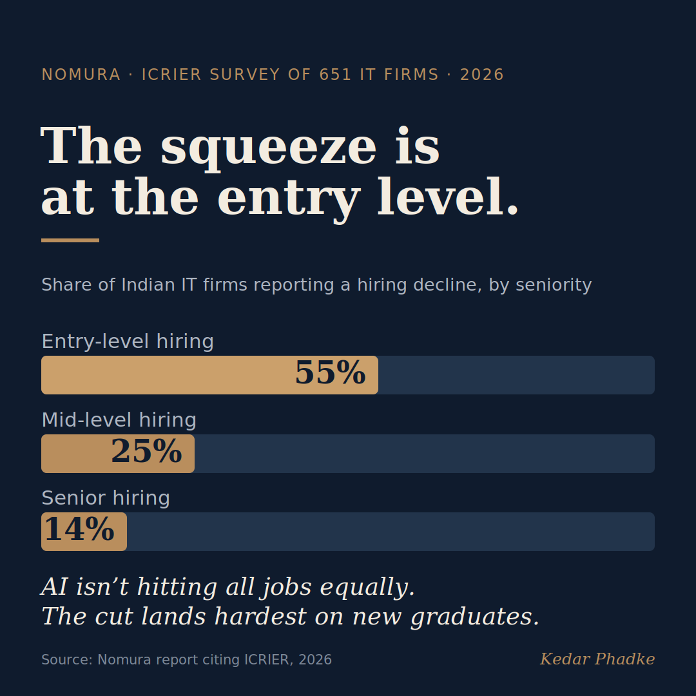

The AI Jobs Boom Has Fine Print. It Also Has an Opening.
Since 2022, India has created about 2.6 AI-related jobs for every job lost to automation. A recent Nomura Holdings report puts the net gain at around 51,000 positions: 83,100 AI hires against roughly 32,000 layoffs and departures. It is a genuinely good number, and it has been shared everywhere.
It is worth reading the next paragraph of the same report, because that is where the story for a student actually sits.
Nomura finds AI is splitting the job market in two: softer demand for entry-level workers, stronger demand for experienced people who understand the business. An ICRIER survey of 651 IT firms in the same report sharpens it. 55% of firms cut entry-level hiring, against 25% at mid-level and 14% at senior level. The jobs are growing. They are just not landing automatically on new graduates the way they once did.

The bar moved, and so did the opportunity
For most of the last decade, IT and consulting firms hired large campus batches and spent three to six months training them from a common baseline. That model assumed you arrived with the fundamentals and the firm would build the rest. That assumption is fading. Firms still invest heavily in reskilling, TCS alone spends around a billion dollars a year, but they increasingly want people who can already apply AI on day one. When TCS said in July it would build a team of up to 8,900 client-facing AI engineers, it named the new premium role plainly: technical depth plus the ability to use it on a real problem straight away.
Here is what that actually means, and it is better news than the headline suggests. Hiring is shifting from where you studied to what you can show. That is the most level playing field this market has offered in a generation. A student from a tier-three college with one real, working AI project can now walk past a coasting graduate from a famous one. The skill in demand is learnable right now, cheaply, and largely outside the syllabus. For the first time, the lever is in the student's hands rather than the institution's.
What the aggregate number hides
A student reading "India is creating AI jobs faster than it is losing them" might relax. It is worth looking closer. The 51,000 net new jobs are not evenly spread. Much of India's AI hiring is for data-annotation and linguistics work, while the roles that pay well and last go to people who can turn AI on a real business problem.
And some graduates are missing from both columns entirely, because they were never hired in the first place. Nomura's own data shows how: net hiring by Indian IT firms fell to 140,000 in FY26 from 600,000 in FY22, as firms quietly narrowed campus recruitment. That does not show up as a layoff. It shows up as an offer that never arrives. The way out of that column is not a better degree. It is visible, demonstrated skill, and that is now within reach of almost anyone willing to build.
The way out isn't a better degree. It's one real thing you can show.
What students can start this week
You do not need to wait for the curriculum to catch up, and you do not need to spend money to start. Pick one real problem and solve it end to end. Automate a repetitive task for your family or a local shop using Python and a free AI tool. Or take a public dataset, traffic, weather, local health numbers, and turn it into a clear insight with a simple chart and a short write-up. The point is not the certificate. It is the finished thing you can show and talk through: what broke, what you changed, what you learned. One working project like that tells a recruiter more than ten courses.
If you are already a few years in, the same move applies one level up. Take something at work that people still do by hand and build the AI-assisted version of it. That single story, told well in an interview, is what moves you from the crowded column to the growing one.
And for those of us who teach
For those of us in education, this is worth sitting with honestly. There is a fair question going around about whether colleges are charging 2026 fees for 2015 courses. It stings because there is something to it. But the honest version is not that we have been lazy. It is that curricula are built to be stable, and this shift has been unusually fast. The gap is structural, and it is ours to close.
The opening for us is the same one our students have. The institutions that fold applied AI in early, real projects, messy data, deployment, and not just another theory module, will not merely avoid looking dated. They will send out graduates who leapfrog. That is a far better reason to move now than fear is.
The two-tier market is real, and I would rather our students hear it from us than discover it at a placement drive. But the same shift that sounds like a threat is, for anyone willing to build, the best opening in years. So my question is for all of us, students and teachers alike: what is the one thing you will build, or help someone build, before the next placement season?
#FutureOfWork #ArtificialIntelligence #Hiring #EngineeringEducation #CareersEvery factual claim here traces to independent reporting on the Nomura report, which draws on public hiring and layoff data rather than any vendor or marketing source.
The numbers
- Nomura Holdings report (released ~8 August 2026): 83,100 AI-related hires against 31,921 layoffs and attrition in India since 2022, a net gain of about 51,000, and a warning of a two-tier labour market. The Print; ANI.
- The ICRIER survey of 651 IT firms, cited in the same report: 55% cut entry-level hiring, versus 25% at mid-level and 14% at senior level. India.com.
- Net hiring by Indian IT firms fell to 140,000 in FY26 from 600,000 in FY22 (Nomura, citing Xpheno), via reduced campus recruitment rather than layoffs: ANI.
Company context
- TCS is building up to 8,900 forward-deployed (client-facing) AI engineers and spends roughly a billion dollars a year on talent development: Business Standard; The Daily Star (Reuters).
A version of this essay was first shared on LinkedIn.